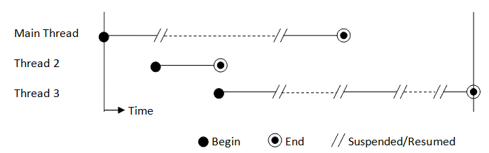
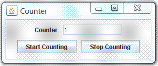
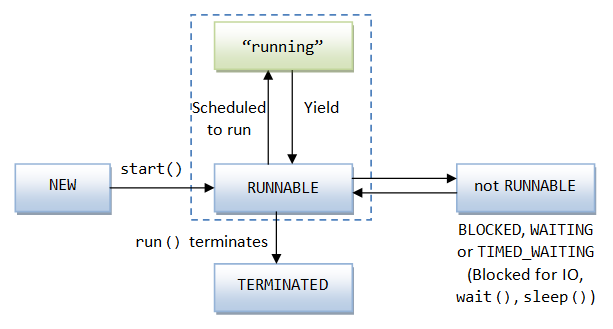

Introduction
Java supports single-thread as well as multi-thread operations. A single-thread program has a single entry point (the main() method) and a single exit point. A multi-thread program has an initial entry point (the main() method), followed by many entry and exit points, which are run concurrently with the main(). The term "concurrency" refers to doing multiple tasks at the same time.
Java has built-in support for concurrent programming by running multiple threads concurrently within a single program. A thread, also called a lightweight process, is a single sequential flow of programming operations, with a definite beginning and an end. During the lifetime of the thread, there is only a single point of execution. A thread by itself is not a program because it cannot run on its own. Instead, it runs within a program. The following figure shows a program with 3 threads running under a single CPU:
Multitasking (or Multi-processing)
Modern operating systems (such as Windows and UNIX) are multitasking system. A multitasking system can perform many tasks concurrently by sharing the computing resources, such as CPU(s), main memory, and I/O channels. In a single-CPU machine, only one task can be executed at one time – through time-slicing of the CPU. In a multi-CPU machine, a few tasks can be executed simultaneously, either distributed among or time-slicing the CPUs.
Multitasking is necessary in today's operating systems for better performance by making full use and optimize the usage of the computing resources. There are generally two kinds of multitasking operating systems:
- Co-operative multitasking systems: Each task must voluntarily yield control to other tasks. This has the drawback that a run-away or uncooperative task may hang the entire system.
- Pre-emptive multitasking systems: Tasks are given time-slices of the CPU(s) and will be forced to yield control to other tasks once their allocation is used up.
Multithreading (within a Process)
In UNIX, we fork a new process. In Windows, we start a program. A process or program has its own address space and control blocks. It is called heavyweight because it consumes a lot of system resources. Within a process or program, we can run multiple threads concurrently to improve the performance.
Threads, unlike heavyweight process, are lightweight and run inside a single process – they share the same address space, the resources allocated and the environment of that process. It is lightweight because it runs within the context of a heavyweight process and takes advantage of the resources allocated for that program and the program’s environment. A thread must carve out its own resources within the running process. For example, a thread has its own stack, registers and program counter. The code running within the thread works only within that context, hence, a thread (of a sequential flow of operations) is also called an execution context.
Multithreading within a program improves the performance of the program by optimizing the usage of system resources. For example, while one thread is blocked (e.g., waiting for completion of an I/O operation), another thread can use the CPU time to perform computations, resulted in better performance and overall throughput.
Multithreading is also necessary to provide better interactivity with the users. For example, in a word processor, while one thread is printing or saving the file, another thread can be used to continue typing. In GUI applications, multithreading is essential in providing a responsive user interface.
For this article, I shall assume that you understand Swing programming, as Swing applications rely on multithreading (to perform their specific function, repaint and process the events) and best to illustrate multithreading.
A typical Java program runs in a single process, and is not interested in multiple processes. However, within the process, it often uses multiple threads to to run multiple tasks concurrently. A standalone Java application starts with a single thread (called main thread) associated with the main() method. This main thread can then start new user threads.
The Infamous "Unresponsive User Interface"
The infamous Unresponsive User Interface (UI) problem is best illustrated by the following Swing program with a counting-loop.
The GUI program has two buttons. Pushing the "Start Counting" button starts the counting. Pushing the "Stop Counting" button is supposed to stop (pause) the counting. The two button-handlers communicate via a boolean flag called stop. The stop-button handler sets the stop flag; while the start-button handler checks if stop flag has been set before continuing the next count.
You should write the program under Eclipse/NetBeans so that we could trace the threads.
Example 1: Unresponsive UI
1 2 3 4 5 6 7 8 9 10 11 12 13 14 15 16 17 18 19 20 21 22 23 24 25 26 27 28 29 30 31 32 33 34 35 36 37 38 39 40 41 42 43 44 45 46 47 48 49 50 51 52 53 54 55 56 57 58 |
import java.awt.*; import java.awt.event.*; import javax.swing.*; /** Illustrate Unresponsive UI problem caused by "busy" Event-Dispatching Thread */ public class UnresponsiveUI extends JFrame { private boolean stop = false; // start or stop the counter private JTextField tfCount; private int count = 1; /** Constructor to setup the GUI components */ public UnresponsiveUI() { Container cp = this.getContentPane(); cp.setLayout(new FlowLayout(FlowLayout.CENTER, 10, 10)); cp.add(new JLabel("Counter")); tfCount = new JTextField(count + "", 10); tfCount.setEditable(false); cp.add(tfCount); JButton btnStart = new JButton("Start Counting"); cp.add(btnStart); btnStart.addActionListener(new ActionListener() { @Override public void actionPerformed(ActionEvent evt) { stop = false; for (int i = 0; i < 100000; ++i) { if (stop) break; // check if STOP button has been pushed, // which changes the stop flag to true tfCount.setText(count + ""); ++count; } } }); JButton btnStop = new JButton("Stop Counting"); cp.add(btnStop); btnStop.addActionListener(new ActionListener() { @Override public void actionPerformed(ActionEvent evt) { stop = true; // set the stop flag } }); setDefaultCloseOperation(JFrame.EXIT_ON_CLOSE); setTitle("Counter"); setSize(300, 120); setVisible(true); } /** The entry main method */ public static void main(String[] args) { // Run GUI codes in Event-Dispatching thread for thread safety SwingUtilities.invokeLater(new Runnable() { public void run() { new UnresponsiveUI(); // Let the constructor do the job } }); } } |
However, once the START button is pushed, the UI is frozen – the counter value is not updated on the display (i.e., the display is not refreshed), and the user interface is not responding to the clicking of the STOP button, or any other user interaction.
Tracing the threads (Advanced)
From the program trace (via Eclipse/NetBeans), we observe:
- The
main()method is started in the "main" thread. - The JRE's windowing subsystem, via
SwingUtilities.invokeLater(), starts 3 threads: "AWT-Windows" (daemon thread), "AWT-Shutdown" and "AWT-EventQueue-0". The "AWT-EventQueue-0" is known as the Event-Dispatching Thread (EDT), which is the one and only thread responsible for handling all the events (such as clicking of buttons) and refreshing the display to ensure thread safety in GUI operations and manipulating GUI components. The constructorUnresponsiveUI()is scheduled to run on the Event-Dispatching thread (viainvokeLater()), after all the existing events have been processed. The "main" thread exits after themain()method completes. A new thread called "DestroyJavaVM" is created. - When you click the START button, the
actionPerformed()is run on the EDT. The EDT is now fully-occupied with the compute-intensive counting-loop. In other words, while the counting is taking place, the EDT is busy and unable to process any event (e.g., clicking the STOP button or the window-close button) and refresh the display - until the counting completes and EDT becomes available. As the result, the display freezes until the counting-loop completes.
It is recommended to run the GUI construction codes on the EDT via the invokeLater(). This is because many of the GUI components are not guaranteed to be thread-safe. Channeling all accesses to GUI components in a single thread ensure thread safety. Suppose that we run the constructor directly on the main() method (under the "main" thread), as follow:
public static void main(String[] args) {
new UnresponsiveUI();
}
The trace shows that:
- The
main()method starts in the "main" thread. - A new thread "AWT-Windows" (Daemon thread) is started when we step-into the constructor "
new UnresponsiveUI()" (because of the "extends JFrame"). - After executing "
setVisible(true)", another two threads are created - "AWT-Shutdown" and "AWT-EventQueue-0" (i.e., the EDT). - The "main" thread exits after the
main()method completes. A new thread called "DestroyJavaVM" is created. - At this point, there are 4 threads running - "AWT-Windows", "AWT-Shutdown" and "AWT-EventQueue-0 (EDT)" and "DestroyJavaVM".
- Clicking the START button invokes the
actionPerformed()in the EDT.
In the earlier case, the EDT is started via the invokeLater(); while in the later case, the EDT starts after setVisible().
Example 2: Still Unresponsive UI with Thread
Instead of using the event-dispatching thread to do the compute-intensive counting, let's create a new thread to do the counting, instead of using the EDT, as follows:
1 2 3 4 5 6 7 8 9 10 11 12 13 14 15 16 17 18 19 20 21 22 23 24 25 26 27 28 29 30 31 32 33 34 35 36 37 38 39 40 41 42 43 44 45 46 47 48 49 50 51 52 53 54 55 56 57 58 59 60 61 62 63 64 65 66 |
import java.awt.*; import java.awt.event.*; import javax.swing.*; /** Illustrate the Unresponsive UI problem caused by "starved" event-dispatching thread */ public class UnresponsiveUIwThread extends JFrame { private boolean stop = false; private JTextField tfCount; private int count = 1; /** Constructor to setup the GUI components */ public UnresponsiveUIwThread() { Container cp = getContentPane(); cp.setLayout(new FlowLayout(FlowLayout.CENTER, 10, 10)); cp.add(new JLabel("Counter")); tfCount = new JTextField(count + "", 10); tfCount.setEditable(false); cp.add(tfCount); JButton btnStart = new JButton("Start Counting"); cp.add(btnStart); btnStart.addActionListener(new ActionListener() { @Override public void actionPerformed(ActionEvent evt) { stop = false; // Create our own Thread to do the counting Thread t = new Thread() { @Override public void run() { // override the run() to specify the running behavior for (int i = 0; i < 100000; ++i) { if (stop) break; tfCount.setText(count + ""); ++count; } } }; t.start(); // call back run() } }); JButton btnStop = new JButton("Stop Counting"); cp.add(btnStop); btnStop.addActionListener(new ActionListener() { @Override public void actionPerformed(ActionEvent evt) { stop = true; } }); setDefaultCloseOperation(JFrame.EXIT_ON_CLOSE); setTitle("Counter"); setSize(300, 120); setVisible(true); } /** The entry main method */ public static void main(String[] args) { // Run GUI codes in Event-Dispatching thread for thread safety javax.swing.SwingUtilities.invokeLater(new Runnable() { @Override public void run() { new UnresponsiveUIwThread(); // Let the constructor do the job } }); } } |
A new thread is created by sub-classing the Thread class, with an anonymous inner class. We override the run() method to specify the running behavior of the thread, which performs the compute-intensive counting. An instance is created. Invoking the start() method of the instance causes the run() to execute on its own thread. (The details on creating new thread will be explained later.)
The responsiveness improves slightly. But the proper counter value is still not shown, and there is a delay in response to the "STOP" button. (You may not see the difference running with a dual-core processor.)
This is because the counting thread does not voluntarily yield control to the EDT. The "starved" EDT is unable to update the display and response to the "STOP" button. Nonetheless, the JVM may force the counting thread to yield control according to the scheduling algorithm, which results in delay on updating the display (TODO: not sure about this).
Tracing the Threads (Advanced)
When the "START" button is clicked, a new thread called "Thread-n" (n is a running number) is created to run the compute-intensive counting-loop. However, this thread is not programmed to yield control to other threads, in particular, the event-dispatching thread.
This program is, however, slightly better than the previous program. The display is updated, and the clicking of "STOP" button has its effect after some delays.
Example 3: Responsive UI with Thread
Let's modify the program by making a call to the counting-thread's sleep() method, which requests the counting-thread to yield control to the event-dispatching thread to update the display and response to the "STOP" button. The counting program now works as desired. The sleep() method also provides the necessary delay needed.
1 2 3 4 5 6 7 8 9 10 11 12 13 14 15 16 17 18 19 20 21 22 23 24 25 26 27 28 29 30 31 32 33 34 35 36 37 38 39 40 41 42 43 44 45 46 47 48 49 50 51 52 53 54 55 56 57 58 59 60 61 62 63 64 65 66 67 68 69 70 71 72 |
import java.awt.*; import java.awt.event.*; import javax.swing.*; /** Resolve the unresponsive UI problem by running the compute-intensive task in this own thread, which yields control to the EDT regularly */ public class UnresponsiveUIwThreadSleep extends JFrame { private boolean stop = false; private JTextField tfCount; private int count = 1; /** Constructor to setup the GUI components */ public UnresponsiveUIwThreadSleep() { Container cp = getContentPane(); cp.setLayout(new FlowLayout(FlowLayout.CENTER, 10, 10)); cp.add(new JLabel("Counter")); tfCount = new JTextField(count + "", 10); tfCount.setEditable(false); cp.add(tfCount); JButton btnStart = new JButton("Start Counting"); cp.add(btnStart); btnStart.addActionListener(new ActionListener() { @Override public void actionPerformed(ActionEvent evt) { stop = false; // Create a new Thread to do the counting Thread t = new Thread() { @Override public void run() { // override the run() for the running behaviors for (int i = 0; i < 100000; ++i) { if (stop) break; tfCount.setText(count + ""); ++count; // Suspend this thread via sleep() and yield control to other threads. // Also provide the necessary delay. try { sleep(10); // milliseconds } catch (InterruptedException ex) {} } } }; t.start(); // call back run() } }); JButton btnStop = new JButton("Stop Counting"); cp.add(btnStop); btnStop.addActionListener(new ActionListener() { @Override public void actionPerformed(ActionEvent evt) { stop = true; } }); setDefaultCloseOperation(JFrame.EXIT_ON_CLOSE); setTitle("Counter"); setSize(300, 120); setVisible(true); } /** The entry main method */ public static void main(String[] args) { // Run GUI codes in Event-Dispatching thread for thread safety javax.swing.SwingUtilities.invokeLater(new Runnable() { @Override public void run() { new UnresponsiveUIwThreadSleep(); // Let the constructor do the job } }); } } |
The sleep() method suspends the current thread and put it into the waiting state for the specified number of milliseconds. Another thread can begin execution (in a single CPU environment). (The sleep() can be interrupted by invoking the interrupt() method of this thread, which triggers an InterruptedException - this is unusual!)
In this case, the thread created to do the counting ("Thread-n") yields control voluntarily to other threads after every count (via the "sleep(10)"). This allows the event-dispatching thread to refresh the display as well as processing the "STOP" button after each count.
Example 4: SwingWorker
JDK 1.6 provides a new javax.swing.SwingWorker class, which can be used to run compute-intensive tasks in background threads, and passes the final result or intermediate results back to methods that run on the event-dispatching thread. We shall discuss SwingWorker in the later section.
Creating a new Thread
There are two ways to create a new thread:
- Extend a subclass from the superclass
Threadand override therun()method to specify the running behavior of the thread. Create an instance and invoke thestart()method, which will call-back therun()on a new thread. For example:Thread t = new Thread() { // Create an instance of an anonymous inner class that extends Thread @Override public void run() { // Override run() to specify the running behaviors for (int i = 0; i < 100000; ++i) { if (stop) break; tfCount.setText(count + ""); ++count; // Suspend itself and yield control to other threads for the specified milliseconds // Also provide the necessary delay try { sleep(10); // milliseconds } catch (InterruptedException ex) {} } } }; t.start(); // Start the thread. Call back run() in a new thread - Create a class that implements the
Runnableinterface and provide the implementation to theabstractmethodrun()to specify the running behavior of the thread. Construct a newThreadinstance using the constructor with aRunnableobject and invoke thestart()method, which will call backrun()on a new thread.// Create an anonymous instance of an anonymous inner class that implements Runnable // and use the instance as the argument of Thread's constructor. Thread t = new Thread(new Runnable() { // Provide implementation to abstract method run() to specify the running behavior @Override public void run() { for (int i = 0; i < 100000; ++i) { if (stop) break; tfCount.setText(count + ""); ++count; // Suspend itself and yield control to other threads // Also provide the necessary delay try { Thread.sleep(10); // milliseconds } catch (InterruptedException ex) {} } } }); t.start(); // call back run() in new thread
The second method is needed as Java does not support multiple inheritance. If a class already extends from a certain superclass, it cannot extend from Thread, and have to implement the Runnable interface. The second method is also used to provide compatibility with JDK 1.1. It should be noted that the Thread class itself implements the Runnable interface.
The run() method specifies the running behavior of the thread and gives the thread something to do. You do not invoke the run() method directly from your program. Instead, you create a Thread instance and invoke the start() method. The start() method, in turn, will call back the run() on a new thread.
Interface Runnable
The interface java.lang.Runnable declares one abstract method run(), which is used to specify the running behavior of the thread:
public void run();
Class Thread
The class java.lang.Thread has the following constructors:
public Thread(); public Thread(String threadName); public Thread(Runnable target); public Thread(Runnable target, String threadName);
The first two constructors are used for creating a thread by sub-classing the Thread class. The next two constructors are used for creating a thread with an instance of class that implements Runnable interface.
The class Thread implements Runnable interface, as shown in the class diagram.
As mentioned, the method run() specifies the running behavior of the thread. You do not invoke the run() method explicitly. Instead, you call the start() method of the class Thread. If a thread is constructed by extending the Thread class, the method start() will call back the overridden run() method in the extended class. On the other hand, if a thread is constructed by providing a Runnable object to the Thread's constructor, the start() method will call back the run() method of the Runnable object (and not the Thread's version).
Creating a new Thread by sub-classing Thread and overriding run()
To create and run a new thread by extending Thread class:
- Define a subclass (named or anonymous) that extends from the superclass
Thread. - In the subclass, override the
run()method to specify the thread's operations, (and provide other implementations such as constructors, variables and methods). - A client class creates an instance of this new class. This instance is called a
Runnableobject (becauseThreadclass itself implementsRunnableinterface). - The client class invokes the
start()method of theRunnableobject. The result is two thread running concurrently – the current thread continue after invoking thestart(), and a new thread that executesrun()method of theRunnableobject.
For example,
class MyThread extends Thread {
// override the run() method
@Override
public void run() {
// Thread's running behavior
}
// constructors, other variables and methods
......
}
public class Client {
public static void main(String[] args) {
......
// Start a new thread
MyThread t1 = new MyThread();
t1.start(); // Called back run()
......
// Start another thread
new MyThread().start();
......
}
}
Often, an inner class (named or anonymous) is used instead of a ordinary subclass. This is done for readability and for providing access to the private variables and methods of the outer class. For example,
public class Client {
......
public Client() {
Thread t = new Thread() { // Create an anonymous inner class extends Thread
@Override
public void run() {
// Thread's running behavior
// Can access the private variables and methods of the outer class
}
};
t.start();
...
// You can also used a named inner class defined below
new MyThread().start();
}
// Define a named inner class extends Thread
class MyThread extends Thread {
public void run() {
// Thread's running behavior
// Can access the private variables and methods of the outer class
}
}
}
Example
1 2 3 4 5 6 7 8 9 10 11 12 13 14 15 16 |
public class MyThread extends Thread {
private String name;
public MyThread(String name) { // constructor
this.name = name;
}
// Override the run() method to specify the thread's running behavior
@Override
public void run() {
for (int i = 1; i <= 5; ++i) {
System.out.println(name + ": " + i);
yield();
}
}
}
|
A class called MyThead is created by extending Thread class and overriding the run() method. A constructor is defined to takes a String as the name of the thread. The run() method prints 1 to 5, but invokes yield() to yield control to other threads voluntarily after printing each number.
1 2 3 4 5 6 7 8 9 10 11 12 |
public class TestMyThread {
public static void main(String[] args) {
Thread[] threads = {
new MyThread("Thread 1"),
new MyThread("Thread 2"),
new MyThread("Thread 3")
};
for (Thread t : threads) {
t.start();
}
}
}
|
The test class allocates and starts three threads. The output is as follows:
Thread 1: 1 Thread 3: 1 Thread 1: 2 Thread 2: 1 Thread 1: 3 Thread 3: 2 Thread 2: 2 Thread 3: 3 Thread 1: 4 Thread 1: 5 Thread 3: 4 Thread 3: 5 Thread 2: 3 Thread 2: 4 Thread 2: 5
Take note that the output is indeterminate (different run is likely to produce different output), as we do not have complete control on how the threads would be executed.
Creating a new Thread by implementing the Runnable Interface
To create and run a new thread by implementing Runnable interface:
- Define a class that implements the
Runnableinterface. - In the class, provide implementation to the
abstractmethodrun()to specify the thread's operations, (and provide other implementations such as constructors, variables and methods). - A client class creates an instance of this new class. The instance is called a
Runnableobject. - The client class then constructs a new
Threadobject with theRunnableobject as argument to the constructor, and invokes thestart()method. Thestart()called back therun()in theRunnableobject (instead of theThreadclass).
class MyRunnable extends SomeClass implements Runnable {
// provide implementation to abstract method run()
@Override
public void run() {
// Thread's running behavior
}
......
// constructors, other variables and methods
}
public class Client {
......
Thread t = new Thread(new MyRunnable());
t.start();
...
}
Again, an inner class (named or anonymous) is often used for readability and to provide access to the private variables and methods of the outer class.
Thread t = new Thread(new Runnable() { // Create an anonymous inner class that implements Runnable interface
public void run() {
// Thread's running behavior
// Can access the private variables and methods of the outer class
}
});
t.start();
Methods in the Thread Class
The methods available in Thread class include:
- public void start(): Begin a new thread. JRE calls back the
run()method of this class. The current thread continues. - public void run(): to specify the execution flow of the new thread. When
run()completes, the thread terminates. - public static sleep(long millis) throws InterruptedException
public static sleep(long millis, int nanos) throws InterruptedException
public void interrupt()
Suspend the current thread and yield control to other threads for the given milliseconds (plus nanoseconds). Methodsleep()is thread-safe as it does not release its monitors. You can awaken a sleep thread before the specified timing via a call to theinterrupt()method. The awaken thread will throw anInterruptedExceptionand execute itsInterruptedExceptionhandler before resuming its operation. This is astaticmethod (which does not require an instance) and commonly used to pause the current thread (viaThread.sleep()) so that the other threads can have a chance to execute. It also provides the necessary delay in many applications. For example:try { // Suspend the current thread and give other threads a chance to run // Also provide the necessary delay Thread.sleep(100); // milliseconds } catch (InterruptedException ex) {} - public static void yield(): hint to the scheduler that the current thread is willing to yield its current use of a processor to allow other threads to run. The scheduler is, however, free to ignore this hint. Rarely-used.
- public boolean isAlive(): Return
falseif the thread is new or dead. Returnstrueif the thread is "runnable" or "not runnable". - public void setPriority(int p): Set the priority-level of the thread, which is implementation dependent.
The stop(), suspend(), and resume() methods have been deprecated in JDK 1.4, because they are not thread-safe, due to the release of monitors. See JDK API documentation for more discussion.
Daemon threads
There are two kinds of threads, daemon threads and user threads. A daemon thread can be set via the setDaemon(boolean on) method. A daemon thread is an infrastructure thread, e.g., the garbage collector thread and the GUI's event dispatcher thread. The JVM exits when the only threads running are all daemon threads. In other words, the JVM considers its job done, when there is no more user threads and all the remaining threads are its infrastructure threads.
[@PENDING more]
The Life Cycle of a Thread
The thread is in the "new" state, once it is constructed. In this state, it is merely an object in the heap, without any system resources allocated for execution. From the "new" state, the only thing you can do is to invoke the start() method, which puts the thread into the "runnable" state. Calling any method besides the start() will trigger an IllegalThreadStateException.
The start() method allocates the system resources necessary to execute the thread, schedules the thread to be run, and calls back the run() once it is scheduled. This put the thread into the "runnable" state. However, most computers have a single CPU and time-slice the CPU to support multithreading. Hence, in the "runnable" state, the thread may be running or waiting for its turn of the CPU time.
A thread cannot be started twice, which triggers a runtime IllegalThreadStateException.
The thread enters the "not-runnable" state when one of these events occurs:
- The
sleep()method is called to suspend the thread for a specified amount of time to yield control to the other threads. You can also invoke theyield()to hint to the scheduler that the current thread is willing to yield its current use of a processor. The scheduler is, however, free to ignore this hint. - The
wait()method is called to wait for a specific condition to be satisfied. - The thread is blocked and waiting for an I/O operation to be completed.
For the "non-runnable" state, the thread becomes "runnable" again:
- If the thread was put to sleep, the specified sleep-time expired or the sleep was interrupted via a call to the
interrupt()method. - If the thread was put to wait via
wait(), itsnotify()ornotifyAll()method was invoked to inform the waiting thread that the specified condition had been fulfilled and the wait was over. - If the thread was blocked for an I/O operation, the I/O operation has been completed.
A thread is in a "terminated" state, only when the run() method terminates naturally and exits.
The method isAlive() can be used to test whether the thread is alive. The isAlive() returns false if the thread is "new" or "terminated". It returns true if the thread is "runnable" or "not-runnable".
JDK 1.5 introduces a new getState() method. This method returns an (nested) enum of type Thread.State, which takes a constant of {NEW, BLOCKED, RUNNABLE, TERMINATED, WAITING}.
NEW: the thread has not yet started.RUNNABLE:WAITING:BLOCKED: the thread is blocked waiting for a monitor lock.TIMED_WAITING: the thread is waiting with a specified waiting time.TERMINATED:
Thread Scheduling and Priority
JVM implements a fixed priority thread-scheduling scheme. Each thread is assigned a priority number (between the Thread.MIN_PRIORITY and Thread.MAX_PRIORITY). The higher the number, the higher is the priority for the thread. When a new thread is created, it inherits the priority number from the thread that created it. You can used the method setPriority() to change the priority number of a thread as follows:
public void setPriority(int priority);
The int priority is JVM dependent. It may take a value between 1 (lowest priority) to 10.
JVM chooses the highest-priority thread for execution. If there is more than one thread with the same highest-priority, JVM schedules them in a round-robin manner.
JVM also implements a preemptive scheduling scheme. In a preemptive environment, if at any time a higher priority thread becomes "runnable", the current lower priority thread will yield control to the higher priority thread immediately.
If there are more than one equal-priority runnable threads, one thread may run until the completion without yielding control to other equal-priority threads. This is known as starvation. Therefore, it is a good practice to yield control to other equal-priority thread via the sleep() or yield() method. However, you can never yield control to a lower-priority thread.
In some operating systems such as Windows, each of the running thread is given a specific amount of CPU time. It is known as time slicing to prevent a thread from starving the other equal-priority threads. However, do not rely on time slicing, as it is implementation dependent.
Hence, a running thread will continue running until:
- A higher priority thread becomes "runnable".
- The running thread yields control voluntarily by calling methods such as
sleep(),yield(), andwait(). - The running thread terminates, i.e., its
run()method exits. - On system that implements time slicing, the running thread consumes its CPU time quota.
An important point to note is the thread scheduling and priority is JVM dependent. This is natural as JVM is a virtual machine and requires the native operating system resources to support multithreading. Most JVM does not guarantee that the highest-priority thread is being run at all times. It may choose to dispatch a lower-priority thread for some reasons such as to prevent starvation. Therefore, you should not rely on the priority in your algorithm.
Monitor Lock & Synchronization
A monitor is an object that can be used to block and revive thread. It is supported in the java.lang.Object root class, via these mechanisms:
- A lock for each object.
- The keyword
synchronizedfor accessing object's lock. - The
wait(),notify()andnotifyAll()methods injava.lang.Objectfor controlling threads.
Each Java object has a lock. At any time, the lock is controlled by, at most, a single thread. You could mark a method or a block of the codes with keyword synchronized. A thread that wants to execute an object's synchronized code must first attempt to acquire its lock. If the lock is under the control of another thread, then the attempting thread goes into the Seeking Lock state and becomes ready only when the lock becomes available. When a thread that owns a lock completes the synchronized code, it gives up the lock.
Keyword "synchronized"
For example,
public synchronized void methodA() { ...... } // synchronized a method based on this object
public void methodB() {
synchronized(this) { // synchronized a block of codes based on this object
......
}
synchronized(anObject) { // synchronized a block of codes based on another object
......
}
......
}
Synchronization can be controlled at method level or block level. Variables cannot be synchronized. You need to synchronized the ALL the methods that access the variables.
private static int counter = 0; public static synchronized void increment() { ++counter; } public static synchronized void decrement() { --counter; }
You can also synchronized on static methods. In this case, the class lock (instead of the instance lock) needs to be acquired in order to execute the method.
Example
1 2 3 4 5 6 7 8 9 10 11 12 13 |
public class SynchronizedCounter {
private static int count = 0;
public synchronized static void increment() {
++count;
System.out.println("Count is " + count + " @ " + System.nanoTime());
}
public synchronized static void decrement() {
--count;
System.out.println("Count is " + count + " @ " + System.nanoTime());
}
}
|
1 2 3 4 5 6 7 8 9 10 11 12 13 14 15 16 17 18 19 20 21 22 23 24 25 26 27 28 29 30 |
public class TestSynchronizedCounter {
public static void main(String[] args) {
Thread threadIncrement = new Thread() {
@Override
public void run() {
for (int i = 0; i < 10; ++i) {
SynchronizedCounter.increment();
try {
sleep(1);
} catch (InterruptedException e) {}
}
}
};
Thread threadDecrement = new Thread() {
@Override
public void run() {
for (int i = 0; i < 10; ++i) {
SynchronizedCounter.decrement();
try {
sleep(1);
} catch (InterruptedException e) {}
}
}
};
threadIncrement.start();
threadDecrement.start();
}
}
|
Count is -1 @ 71585106672577 Count is 0 @ 71585107040916 Count is -1 @ 71585107580661 Count is 0 @ 71585107720865 Count is 1 @ 71585108577488 Count is 0 @ 71585108715261 Count is 1 @ 71585109590928 Count is 0 @ 71585111400613 Count is 1 @ 71585111640095 Count is 0 @ 71585112581002 Count is 1 @ 71585112748760 Count is 2 @ 71585113580259 Count is 1 @ 71585113729378 Count is 2 @ 71585114579922 Count is 1 @ 71585114712832 Count is 2 @ 71585115578775 Count is 1 @ 71585115722626 Count is 2 @ 71585116578843 Count is 1 @ 71585116719452 Count is 0 @ 71585117583368
It is important to note that while the object is locked, synchronized methods and codes are blocked. However, non-synchronized methods can proceed without acquiring the lock. Hence, it is necessary to synchronize all the methods involved the shared resources. For example, if synchronized access to a variable is desired, all the methods to that variable should be synchronized. Otherwise, a non-synchronized method can proceed without first obtaining the lock, which may corrupt the state of the variable.
wait(), notify() & notifyAll() for Inter-Thread Synchronization
These methods are defined in the java.lang.Object class (instead of java.land.Thread class). These methods can only be called in the synchronous codes.
The wait() and notify() methods provide a way for a shared object to pause a thread when
it becomes unavailable to that thread and to allow the thread to continue when appropriate.
Example: Consumer and Producer
In this example, a producer produces a message (via putMessage() method) that is to be consumed by the consumer (via getMessage() method), before it can produce the next message. In a so-called producer-consumer pattern, one thread can suspend itself using wait() (and release the lock) until such time when another thread awaken it using notify() or notifyAll().
1 2 3 4 5 6 7 8 9 10 11 12 13 14 15 16 17 18 19 20 21 22 23 24 25 26 27 28 29 30 31 32 33 |
// Testing wait() and notify() public class MessageBox { private String message; private boolean hasMessage; // producer public synchronized void putMessage(String message) { while (hasMessage) { // no room for new message try { wait(); // release the lock of this object } catch (InterruptedException e) { } } // acquire the lock and continue hasMessage = true; this.message = message + " Put @ " + System.nanoTime(); notify(); } // consumer public synchronized String getMessage() { while (!hasMessage) { // no new message try { wait(); // release the lock of this object } catch (InterruptedException e) { } } // acquire the lock and continue hasMessage = false; notify(); return message + " Get @ " + System.nanoTime(); } } |
1 2 3 4 5 6 7 8 9 10 11 12 13 14 15 16 17 18 19 20 21 22 23 24 25 26 27 28 29 30 31 32 33 34 35 36 37 38 39 40 |
public class TestMessageBox {
public static void main(String[] args) {
final MessageBox box = new MessageBox();
Thread producerThread = new Thread() {
@Override
public void run() {
System.out.println("Producer thread started...");
for (int i = 1; i <= 6; ++i) {
box.putMessage("message " + i);
System.out.println("Put message " + i);
}
}
};
Thread consumerThread1 = new Thread() {
@Override
public void run() {
System.out.println("Consumer thread 1 started...");
for (int i = 1; i <= 3; ++i) {
System.out.println("Consumer thread 1 Get " + box.getMessage());
}
}
};
Thread consumerThread2 = new Thread() {
@Override
public void run() {
System.out.println("Consumer thread 2 started...");
for (int i = 1; i <= 3; ++i) {
System.out.println("Consumer thread 2 Get " + box.getMessage());
}
}
};
consumerThread1.start();
consumerThread2.start();
producerThread.start();
}
}
|
Consumer thread 1 started... Producer thread started... Consumer thread 2 started... Consumer thread 1 Get message 1 Put @ 70191223637589 Get @ 70191223680947 Put message 1 Put message 2 Consumer thread 2 Get message 2 Put @ 70191224046855 Get @ 70191224064279 Consumer thread 1 Get message 3 Put @ 70191224164772 Get @ 70191224193543 Put message 3 Put message 4 Consumer thread 2 Get message 4 Put @ 70191224647382 Get @ 70191224664401 Put message 5 Consumer thread 2 Get message 5 Put @ 70191224939136 Get @ 70191224965070 Consumer thread 1 Get message 6 Put @ 70191225071236 Get @ 70191225101222 Put message 6
The output messages (on System.out) may appear out-of-order. But closer inspection on the put/get timestamp confirms the correct sequence of operations.
The synchronized producer method putMessage() acquires the lock of this object, check if the previous message has been cleared. Otherwise, it calls wait(), releases the lock of this object, goes into WAITING state and places this thread on this object's "wait" set. On the other hand, the synchronized consumer's method getMessage() acquires the lock of this object and checks for new message. If there is a new message, it clears the message and issues notify(), which arbitrarily picks a thread on this object's "wait" set (which happens to be the producer thread in this case) and place it on BLOCKED state. The consumer thread, in turn, goes into the WAITING state and placed itself in the "wait" set of this object (after the wait() method). The producer thread then acquires the thread and continue its operations.
The difference between notify() and notifyAll() is notify() arbitrarily picks a thread from this object's waiting pool and places it on the Seeking-lock state; while notifyAll() awakens all the threads in this object's waiting pool. The awaken threads then compete for execution in the normal manner.
It is interesting to point out that multithreading is built into the Java language right at the root class java.lang.Object. The synchronization lock is kept in the Object. Methods wait(), notify(), notifyAll() used for coordinating threads are right in the class Object.
wait() with timeout
There are variations of wait() which takes in a timeout value:
public final void wait() throws InterruptedException public final void wait(long timeout) throws InterruptedException public final void wait(long timeout, int nanos) throws InterruptedException
The thread will ALSO go to BLOCKED state after the timeout expired.
Starvation & Deadlock
Starvation is the state where one (or more) thread is deprived of a chance to access an object. The problem can be resolved by setting the correct priorities to all the threads.
Deadlock refers to the situation where a thread is waiting for a condition, but somewhere else in the program prevented the condition from being fulfilled, thus, prevented the thread from executing. A classical example, known as "deadly embrace" is as follow: thread 1 is holding the lock to object A and thread 2 is holding the lock to object B. Thread 1 is waiting to acquire the lock to object B and thread 2 is waiting to acquire the lock to object A. Both threads are in deadlock and cannot proceed. If both threads seek the lock in the same order, the situation will not arise. But it is complex to program this arrangement. Alternatively, you could synchronize on another object, instead of object A and B; or synchronize only a portion of a method instead of the entire method. Deadlock can be complicated which may involves many threads and objects and can be hard to detect.
Multithreading issues in Swing Applications
References:
- Swing Tutorial's "Concurrency in Swing".
- John O'Conner, "Improve Application Performance With SwingWorker in Java SE 6" @ http://java.sun.com/developer/technicalArticles/javase/swingworker/.
A Swing application runs on multiple threads. Specifically, It has three types of threads:
- An initial thread, or the Main thread, which runs the
main()method, starts the building of GUI, and exits. - An Event-Dispatching Thread (EDT)
- Some Background Worker threads for compute-intensive task and IO.
All the event-handling, painting and screen refreshing codes runs in a single thread, called the event-dispatching thread. This is to ensure that one event handler finishes execution before the next handler starts, and that painting is not interrupted by events. If the event-dispatching thread is starved by another compute-intensive task, the user interface "freezes", and the program becomes unresponsive to user interaction. "Ideally, any task that requires more than 30 to 100 milliseconds should not run on the EDT. Otherwise, users will sense a pause between their input and the UI response."
Furthermore, all codes accessing the GUI components should be run on the event-dispatching thread as many of these components are not guaranteed to be thread-safe. Accessing them from the same thread avoids the multithreading issues.
In summary,
- Time-consuming and blocking-IO tasks should not be run on the event-dispatching thread, so as not to starve the event-dispatching thread to response to events triggered through user's interaction and repainting the screen.
- Swing components should be accessed on the event-dispatching thread only for thread safety.
javax.Swing.SwingUtilities.invokeLater() and invokeAndWait()
The invokeLater(Runnable) and invokeAndWait(Runnable) methods schedule the Runnable task in the event-dispatching thread.
To avoid threading issues between the main thread (which runs the main() method) and the event-dispatching thread, it is recommended that you use javax.swing.SwingUtilities.invokeLater(Runnable) to create the GUI components on the event-dispatching thread, instead of using the main thread. Recall that Swing components are not guaranteed to be thread-safe and their access shall be confined to a single thread, the EDT. For example,
/** The entry main() method */ public static void main(String args[]) { // Run the GUI codes on the event-dispatching thread for thread-safety SwingUtilities.invokeLater(new Runnable() { @Override public void run() { JFrame frame = new JFrame("My Swing Application"); frame.setContentPane(new MyMainPanel()); frame.setDefaultCloseOperation(JFrame.EXIT_ON_CLOSE); frame.pack(); frame.setLocationRelativeTo(null); // center on screen frame.setVisible(true); // show it } }); }
The static method SwingUtilities.invokelater() takes a Runnable object (implemented as an anonymous inner class) as its argument, and schedules the task (specified in the run() method) on the event-dispatching thread. You can call invokeLater() from any thread to request the event-dispatching thread to run certain codes, as specified in the run() method of the Runnable argument. The invokeLater() returns immediately, without waiting for the event-dispatching thread to execute the code.
If needed, you can use invokeAndWait(), which waits until the event-dispatching thread has executed the specified codes, and returns. For applet, it is recommended to run the GUI construction codes (in init()) via invokeAndWait(). This is to avoid problems caused by init() exits before the completion of GUI construction. For example,
public class SwingTemplateJApplet extends JApplet {
/** init() to setup the GUI components */
@Override
public void init() {
// Run GUI codes in the Event-Dispatching thread for thread safety
try {
// Use invokeAndWait() to ensure that init() exits after GUI construction
SwingUtilities.invokeAndWait(new Runnable() {
@Override
public void run() {
// Set the content-pane of JApplet to an instance of main JPanel
setContentPane(new SwingTemplateJPanel());
}
});
} catch (Exception ex) {
ex.printStackTrace();
}
}
}
You can also java.awt.EventQueue.invokeLater() in place of the javax.swing.SwingUtilities.invokeLater(). The javax.swing.SwingUtilities.invokeLater() is just a cover for java.awt.EventQueue.invokeLater().
The traces in the earlier examples show that if SwingUtilities.invokeLater() is not used, the event-dispatching thread is started after the setVisible() method. On the other hand, the invokerLater() starts the event-dispatching thread.
javax.swing.Timer (JDK 1.2)
If you need to update a component after a certain time delay or at a regular time interval, use a timer class, such as javax.swing.Timer (JDK 1.2) or java.util.Timer (JDK 1.3).
For javax.swing.Timer, read "animation using javax.swing.Timer".
[TODO] java.util.Timer (JDK 1.3)
javax.swing.SwingWorker<T,V> (JDK 1.6)
As mentioned, in a Swing application:
- Compute-intensive task should not be run on the event-dispatching thread (EDT), so as not to starve the EDT from processing events and repaints.
- Swing components shall be accessed in the EDT only for thread safety.
The javax.swing.SwingWorkder<T,V> class helps to manage the interaction between the only EDT and several background worker threads. It can be used to schedule a compute-intensive task in a background thread and return the final result or intermediate results in the EDT.
The signature of the SwingWorker class is as follow:
public abstract class SwingWorker<T,V> implements RunnableFuture
SwingWorker<T,V> is an abstract class with two type parameters: where T specifies the final result type of the doInBackground() and get() methods, and V specifies the type of the intermediate results of the publish() and process() methods.
The RunnableFuture interface is the combination of two interfaces: Runnable and Future. The interface Runnable declares an abstract method run(); while Future declares get(), cancel(), isDone(), and isCancelled().
Scheduling a Background Task
protected abstract T doInBackground() throws Exception // Do this task in a background thread protected void done() // Executes on the Event-Dispatching thread after the doInBackground() method finishes. public final T get() throws InterruptedException, ExecutionException // Waits for doInBackground() to complete and gets the result. // Calling get() on the Event-Dispatching thread blocks all events, including repaints, // until the SwingWorker completes. public final void execute() // Schedules this SwingWorker for execution on one of the worker thread. public final boolean cancel(boolean mayInterruptIfRunning) // Attempts to cancel execution of this task. public final boolean isDone() // Returns true if this task has completed (normally or exception) public final boolean isCancelled() // Returns true if this task was cancelled before it completed normally
To schedule a task in a worker thread, extend a subclass of SwingWorker<T,V> (typically an inner class) and override:
- the
doInBackground()to specify the task behavior, which will be scheduled in one of the worker thread and returns a result of typeT. - the
done()methods, which will be run in the EDT afterdoInBackground()completes. Indone(), use theget()method to retrieve the result ofdoInBackground()(of the typeT).
Example
This example includes a compute-intensive task into the counter application. The compute-intensive task is scheduled to run in one of the worker thread, and hence will not starve the event-dispatching thread to run the counter and repaints.
1 2 3 4 5 6 7 8 9 10 11 12 13 14 15 16 17 18 19 20 21 22 23 24 25 26 27 28 29 30 31 32 33 34 35 36 37 38 39 40 41 42 43 44 45 46 47 48 49 50 51 52 53 54 55 56 57 58 59 60 61 62 63 64 65 66 67 68 69 70 71 72 73 74 75 76 77 78 79 80 81 82 83 84 85 86 87 88 89 90 91 92 93 94 |
import java.awt.*; import java.awt.event.*; import java.util.concurrent.ExecutionException; import javax.swing.*; /** Test SwingWorker on the counter application with a compute-intensive task */ @SuppressWarnings("serial") public class SwingWorkerCounter extends JPanel { // For counter private JTextField tfCount; private int count = 0; // For SwingWorker JButton btnStartWorker; // to start the worker private JLabel lblWorker; // for displaying the result /** Constructor to setup the GUI components */ public SwingWorkerCounter () { setLayout(new FlowLayout()); add(new JLabel("Counter")); tfCount = new JTextField("0", 10); tfCount.setEditable(false); add(tfCount); JButton btnCount = new JButton("Count"); add(btnCount); btnCount.addActionListener(new ActionListener() { @Override public void actionPerformed(ActionEvent e) { ++count; tfCount.setText(count + ""); } }); /** Create a SwingWorker instance to run a compute-intensive task Final result is String, no intermediate result (Void) */ final SwingWorker<String, Void> worker = new SwingWorker<String, Void>() { /** Schedule a compute-intensive task in a background thread */ @Override protected String doInBackground() throws Exception { // Sum from 1 to a large n long sum = 0; for (int number = 1; number < 1000000000; ++number) { sum += number; } return sum + ""; } /** Run in event-dispatching thread after doInBackground() completes */ @Override protected void done() { try { // Use get() to get the result of doInBackground() String result = get(); // Display the result in the label (run in EDT) lblWorker.setText("Result is " + result); } catch (InterruptedException e) { e.printStackTrace(); } catch (ExecutionException e) { e.printStackTrace(); } } }; btnStartWorker = new JButton("Start Worker"); add(btnStartWorker); btnStartWorker.addActionListener(new ActionListener() { @Override public void actionPerformed(ActionEvent e) { worker.execute(); // start the worker thread lblWorker.setText(" Running..."); btnStartWorker.setEnabled(false); // Each instance of SwingWorker run once } }); lblWorker = new JLabel(" Not started..."); add(lblWorker); } /** The entry main() method */ public static void main(String[] args) { // Run the GUI construction in the Event-Dispatching thread for thread-safety SwingUtilities.invokeLater(new Runnable() { @Override public void run() { JFrame frame = new JFrame("SwingWorker Test"); frame.setContentPane(new SwingWorkerCounter()); frame.setDefaultCloseOperation(JFrame.EXIT_ON_CLOSE); frame.setSize(300, 150); frame.setVisible(true); } }); } } |
A instance of SwingWorker is designed to run only once. You cannot restart the instance. You need to create a new instance for run the task again.
More Example: "TumbleItem" demo of the Swing Tutorial.
Publishing and Processing Intermediate Results
Other than processing the final result in done(), you can publish() and process() intermediate results as the need arises.
@SafeVarargs protected final void publish(V... chunks) // Sends data chunks to the process(java.util.List<V>) method. // This method shall be called inside the doInBackground() to deliver intermediate results // for processing on the Event-Dispatching thread inside the process() method. protected void process(List<V> chunks) // Receives data chunks from publish() asynchronously on the Event-Dispatching thread.
In doInBackground(), use publish(V...) to publish one or more intermediate result(s) of type V. Override the process(List<V>) method to process the results published so far in a List<V>. The process() method runs in the event-dispatching thread.
Example
1 2 3 4 5 6 7 8 9 10 11 12 13 14 15 16 17 18 19 20 21 22 23 24 25 26 27 28 29 30 31 32 33 34 35 36 37 38 39 40 41 42 43 44 45 46 47 48 49 50 51 52 53 54 55 56 57 58 59 60 61 62 63 64 65 66 67 68 69 70 71 72 73 74 75 76 77 78 79 80 81 82 83 84 85 86 87 88 89 90 91 92 93 94 95 96 97 98 99 100 101 102 103 104 |
import java.awt.*; import java.awt.event.*; import java.util.concurrent.ExecutionException; import javax.swing.*; /** Test SwingWorker on the counter application with a compute-intensive task */ @SuppressWarnings("serial") public class SwingWorkerCounterIntermediateResult extends JPanel { // For counter private JTextField tfCount; private int count = 0; // For SwingWorker JButton btnStartWorker; // to start the worker private JLabel lblWorker; // for displaying the result /** Constructor to setup the GUI components */ public SwingWorkerCounterIntermediateResult () { setLayout(new FlowLayout()); add(new JLabel("Counter")); tfCount = new JTextField("0", 10); tfCount.setEditable(false); add(tfCount); JButton btnCount = new JButton("Count"); add(btnCount); btnCount.addActionListener(new ActionListener() { @Override public void actionPerformed(ActionEvent e) { ++count; tfCount.setText(count + ""); } }); /** Create a SwingWorker instance to run a compute-intensive task */ final SwingWorker<String, String> worker = new SwingWorker<String, String>() { /** Schedule a compute-intensive task in a background thread */ @Override protected String doInBackground() throws Exception { long sum = 0; for (int number = 0; number < 10000000; ++number) { sum += number; publish(sum + ""); // Send "every" intermediate result to process() // You might not publish every intermediate result } return sum + ""; } /** Run in event-dispatching thread after doInBackground() completes */ @Override protected void done() { try { // Use get() to get the result of doInBackground() String finalResult = get(); // Display the result in the label (run in EDT) lblWorker.setText("Final Result is " + finalResult); } catch (InterruptedException e) { e.printStackTrace(); } catch (ExecutionException e) { e.printStackTrace(); } } /** Run in event-dispatching thread to process intermediate results send from publish(). */ @Override protected void process(java.util.List<String> chunks) { // Get the latest result from the list String latestResult = chunks.get(chunks.size() - 1); lblWorker.setText("Result is " + latestResult); } }; btnStartWorker = new JButton("Start Worker"); add(btnStartWorker); btnStartWorker.addActionListener(new ActionListener() { @Override public void actionPerformed(ActionEvent e) { worker.execute(); // start the worker thread lblWorker.setText(" Running..."); btnStartWorker.setEnabled(false); // SwingWorker can only run once } }); lblWorker = new JLabel(" Not started..."); add(lblWorker); } /** The entry main() method */ public static void main(String[] args) { // Run the GUI construction in the Event-Dispatching thread for thread-safety SwingUtilities.invokeLater(new Runnable() { @Override public void run() { JFrame frame = new JFrame("SwingWorker Test"); frame.setContentPane(new SwingWorkerCounterIntermediateResult()); frame.setDefaultCloseOperation(JFrame.EXIT_ON_CLOSE); frame.setSize(300, 150); frame.setVisible(true); } }); } } |
More Example: "IconDemoApp" demo of Swing Tutorial.
Property Change Event
The doInBackground() fires PropertyChangeEvent to all its PropertyChangeListeners about bound properties changes. There are two bound properties: "state" and "progress". "state" is defined in the nested enum SwingWorker.StateValue, with value of PENDING (SwingWorker instance created), START (doInBackground started) and DONE (doInBackground completed). "progress" is an int, in the range of 0 to 100. You can change the progress value via setProgress() method inside the doInBackground() to fire a PropertyChangeEvent to all its PropertyChangeListeners.
Example
In this example, inside the doInBackground(), we invoke setProgess() to change the progress bound-property value (between 0 to 100), which in turn fires a PropertyChangeEvent. A PropertyChangeListener is defined and registered with this SwingWorker, which shows the progress value on a progress bar. The event-handler runs in the EDT.
1 2 3 4 5 6 7 8 9 10 11 12 13 14 15 16 17 18 19 20 21 22 23 24 25 26 27 28 29 30 31 32 33 34 35 36 37 38 39 40 41 42 43 44 45 46 47 48 49 50 51 52 53 54 55 56 57 58 59 60 61 62 63 64 65 66 67 68 69 70 71 72 73 74 75 76 77 78 79 80 81 82 83 84 85 86 87 88 89 90 91 92 93 94 95 96 97 98 99 100 101 102 103 104 105 106 107 108 109 110 111 112 113 114 115 116 117 118 119 120 |
import java.awt.*; import java.awt.event.*; import java.beans.PropertyChangeEvent; import java.beans.PropertyChangeListener; import java.util.concurrent.ExecutionException; import javax.swing.*; /** Test SwingWorker on the counter application with a compute-intensive task */ @SuppressWarnings("serial") public class SwingWorkerCounterProgress extends JPanel { // For counter private JTextField tfCount; private int count = 0; // For SwingWorker JButton btnStartWorker; // to start the worker private JLabel lblWorker; // for displaying the result JProgressBar pbWorker; // progress bar for the worker task /** Constructor to setup the GUI components */ public SwingWorkerCounterProgress () { setLayout(new FlowLayout()); add(new JLabel("Counter")); tfCount = new JTextField("0", 10); tfCount.setEditable(false); add(tfCount); JButton btnCount = new JButton("Count"); add(btnCount); btnCount.addActionListener(new ActionListener() { @Override public void actionPerformed(ActionEvent e) { ++count; tfCount.setText(count + ""); } }); /** Create a SwingWorker instance to run a compute-intensive task */ final SwingWorker<String, String> worker = new SwingWorker<String, String>() { /** Schedule a compute-intensive task in a background thread */ @Override protected String doInBackground() throws Exception { long sum = 0; int maxNumber = 10000000; for (int number = 0; number < maxNumber; ++number) { sum += number; publish(sum + ""); // send intermediate result to process() // Fire PropertyChangeEvent for the bound-property "progress" setProgress(100 * (number + 1) / maxNumber); } return sum + ""; } /** Run in event-dispatching thread after doInBackground() completes */ @Override protected void done() { try { // Use get() to get the result of doInBackground() String finalResult = get(); // Display the result in the label (run in EDT) lblWorker.setText("Final Result is " + finalResult); } catch (InterruptedException e) { e.printStackTrace(); } catch (ExecutionException e) { e.printStackTrace(); } } /** Run in event-dispatching thread to process intermediate results send from publish(). */ @Override protected void process(java.util.List<String> chunks) { // Get the latest result from the list String latestResult = chunks.get(chunks.size() - 1); lblWorker.setText("Result is " + latestResult); } }; /** Event handler for the PropertyChangeEvent of property "progress" */ worker.addPropertyChangeListener(new PropertyChangeListener() { @Override public void propertyChange(PropertyChangeEvent evt) { if (evt.getPropertyName().equals("progress")) { // check the property name pbWorker.setValue((Integer)evt.getNewValue()); // update progress bar } } }); btnStartWorker = new JButton("Start Worker"); add(btnStartWorker); btnStartWorker.addActionListener(new ActionListener() { @Override public void actionPerformed(ActionEvent e) { worker.execute(); // start the worker thread lblWorker.setText(" Running..."); btnStartWorker.setEnabled(false); // SwingWorker can only run once } }); lblWorker = new JLabel(" Not started..."); add(lblWorker); pbWorker = new JProgressBar(); add(pbWorker); } /** The entry main() method */ public static void main(String[] args) { // Run the GUI construction in the Event-Dispatching thread for thread-safety SwingUtilities.invokeLater(new Runnable() { @Override public void run() { JFrame frame = new JFrame("SwingWorker Test"); frame.setContentPane(new SwingWorkerCounterProgress()); frame.setDefaultCloseOperation(JFrame.EXIT_ON_CLOSE); frame.setSize(300, 150); frame.setVisible(true); } }); } } |
Summary
Threads are essential to build a responsive graphical user interface. These are the typical situations where a new thread should be used:
- To fork out a new thread for a time-consuming initialization task (such as disk I/O) in the main thread, so that the GUI comes up faster.
- To fork out a new thread for a time-consuming task (within an event handler) in the event dispatch thread, so that the GUI remains responsive.
- Use timer for a repetitive task, which runs at regular time interval or after a certain time delay.
- To fork out a new thread if the operations need to wait for a message from another thread or program.
In addition, the compute-intensive threads must be co-operative and yield control to others.
Thread Pool, Executor, Callable/Future (JDK 1.5)
The thread pool supporting classes are introduced in package java.lang.concurrent, in JDK 1.5.
Thread Pool
A thread pool is a managed collection of threads that are available to execute tasks. When a large number of tasks is executed using a thread pool, the performance improves as the threads are re-cycled to execute the tasks, which reduces the per-task invocation overhead.
To use a thread pool, you can use an implementation of the interface ExecutorService, such as ThreadPoolExecutor or ScheduledThreadPoolExecutor. However, more convenient factory methods are provided in the Executors class as follows:
Executors.newSingleThreadExecutor(): creates a single background thread.Executors.newFixedThreadPool(int numThreads): creates a fixed size thread pool.Executors.newCachedThreadPool(): create a unbounded thread pool, with automatic thread reclamation.
The steps of using thread pool are:
- Write you worker thread class which implements
Runnableinterface. Therun()method specifies the behavior of the running thread. - Create a thread pool (
ExecutorService) using one the factory methods provided by theExecutorsclass. The thread pool could have a single thread, a fixed number of threads, or an unbounded number of threads. - Create instances of your worker thread class. Use
execute(Runnable r)method of the thread pool to add aRunnabletask into the thread pool. The task will be scheduled and executes if there is an available thread in the pool.
Interface java.util.concurrent.Executor
An Executor object can execute Runnable tasks submitted. The interface declares an abstract method:
public void execute(Runnable r)
It executes the given task at some time in the future. The task may be executed in a new thread, in a thread pool, or in the calling thread, depending on the implementation of Executor (e.g. single thread or thread pool)
Interface java.util.concurrent.ExecutorService
Interface ExecutorService declares many abstract methods. The important ones are:
public void shutdown(); // Initiates an orderly shutdown of the thread pool. // The previously executed/submitted tasks are allowed to complete, // but no new tasks will be scheduled. public <T> Future<T> submit(Callable<T> task); // Submit or schedule the callable task for execution, which returns a Future object.
Class java.util.concurrent.Executors
The class Executors provides factory methods for creating Executor object. For example:
static ExecutorService newSingleThreadExecutor() static ExecutorService newFixedThreadPool(int nThreads) static ExecutorService newCachedThreadPool() static ScheduledExecutorService newSingleThreadScheduledExecutor() static ScheduledExecutorService newScheduledThreadPool(int size)
Example
public class WorkerThread implements Runnable {
private int workerNumber;
WorkerThread(int workerNumber) {
this.workerNumber = workerNumber;
}
public void run() {
// The thread simply prints 1 to 5
for (int i = 1; i <= 5; ++i) {
System.out.printf("Worker %d: %d\n", workerNumber, i);
try {
// sleep for 0 to 0.5 second
Thread.sleep((int)(Math.random() * 500));
} catch (InterruptedException e) {}
}
}
}
import java.util.concurrent.ExecutorService;
import java.util.concurrent.Executors;
public class ThreadPoolTest {
public static void main(String[] args) {
int numWorkers = Integer.parseInt(args[0]);
int threadPoolSize = Integer.parseInt(args[1]);
ExecutorService pool =
Executors.newFixedThreadPool(threadPoolSize);
WorkerThread[] workers = new WorkerThread[numWorkers];
for (int i = 0; i < numWorkers; ++i) {
workers[i] = new WorkerThread(i+1);
pool.execute(workers[i]);
}
pool.shutdown();
}
}
//2 threads, 5 workers
> java ThreadPoolTest 5 2
Worker 1: 1
Worker 2: 1
Worker 1: 2
Worker 1: 3
Worker 2: 2
Worker 1: 4
Worker 2: 3
Worker 1: 5
Worker 3: 1
Worker 3: 2
Worker 2: 4
Worker 3: 3
Worker 2: 5
Worker 3: 4
Worker 3: 5
Worker 4: 1
Worker 4: 2
Worker 5: 1
Worker 4: 3
Worker 5: 2
Worker 5: 3
Worker 4: 4
Worker 5: 4
Worker 5: 5
Worker 4: 5
Worker 1 and 2 were first scheduled for execution using the 2 threads in the pool, followed by worker 3, 4 and 5. After the task using the thread completes, the thread is returned to the pool. Another task can then be scheduled and begin execution.
You can use pool.shutdown() to shutdown all the threads in the pool.
Interface java.util.concurrent.Callable<V> and Future<V>
A Callable is similar to a Runnable. However, Callable provides a way to return a result or Exception to the thread that spin this Callable. Callable declares an abstract method call() (instead of run() in the Runnable).
public V call()
// Call() returns a result of type <V>, or throws an exception if unable to do so.
In the thread pool, instead of using execute(Runnable r), you use submit(Callable r), which returns a Future<V> object (declared in the ExecutorService interface). When the result is required, you can retrieve using get() method on the Future object. If the result is ready, it is returned, otherwise, the calling thread is blocked until the result is available.
The interface Future<V> declares the following abstract methods:
V get() // wait if necessary, retrieve result V get(long timeout, TimeUnit unit) boolean cancel(boolean mayInterruptIfRunning) boolean isCancelled() boolean isDone() // return true if this task completed
Example
import java.util.concurrent.Callable;
public class CallableWorkerThread implements Callable<String> {
private int workerNumber;
CallableWorkerThread(int workerNumber) {
this.workerNumber = workerNumber;
}
public String call() { // use call() instead of run()
for (int i = 1; i <= 5; ++i) { // just print 1 to 5
System.out.printf("Worker %d: %d\n", workerNumber, i);
try {
Thread.sleep((int)(Math.random() * 1000));
} catch (InterruptedException e) {}
}
return "worker " + workerNumber;
}
}
import java.util.concurrent.*;
public class CallableThreadPoolTest {
public static void main(String[] args) {
int numWorkers = Integer.parseInt(args[0]);
ExecutorService pool = Executors.newCachedThreadPool();
CallableWorkerThread workers[] = new CallableWorkerThread[numWorkers];
Future[] futures = new Future[numWorkers];
for (int i = 0; i < numWorkers; ++i) {
workers[i] = new CallableWorkerThread(i + 1);
futures[i] = pool.submit(workers[i]);
}
for (int i = 0; i < numWorkers; ++i) {
try {
System.out.println(futures[i].get() + " ended");
} catch (InterruptedException ex) {
ex.printStackTrace();
} catch (ExecutionException ex) {
ex.printStackTrace();
}
}
}
}
Output with 3 workers, unbound number of threads is as follows:
> java CallableThreadPoolTest 3 Worker 1: 1 Worker 3: 1 Worker 2: 1 Worker 3: 2 Worker 1: 2 Worker 2: 2 Worker 2: 3 Worker 2: 4 Worker 2: 5 Worker 1: 3 Worker 3: 3 Worker 3: 4 Worker 3: 5 Worker 1: 4 Worker 1: 5 worker 1 ended worker 2 ended worker 3 ended
Other New Thread Features in JDK 1.5
- Lock
- ReadWriteLock
- Semaphores
- Atomics
- Blocking Queue
[TODO]
LINK TO JAVA REFERENCES & RESOURCESMORE REFERENCES & RESOURCES
- Swing Tutorial's "Concurrency in Swing".
- John O'Conner, "Improve Application Performance With SwingWorker in Java SE 6" @ http://java.sun.com/developer/technicalArticles/javase/swingworker/.